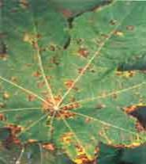

| Home |
| CASTOR |
mAJOR DISEASES |
| 1. Seedling blight |
| 2. Rust |
| 3. Leaf blight |
| 4. Brown leaf spot |
| 5. Powdery mildew |
| 6. Stem rot |
| 7. Bacterial leaf spot |
| 8. Wilt |
| Questions |
| Download Notes |
CASTOR :: MAJOR DISEASE :: BROWN LEAF SPOT
Brown leaf spot - Cercospora ricinella
Symptoms
The disease appears as minute brown specks surrounded by a pale green halo. The spots enlarge to greyish white centre portion with deep brown margin. The spots may be 2-4 mm in diameter and when several spots coalesce, large brown patches appear but restricted by veins. Infected tissues often drop off leaving shot-hole symptoms. In severe infections, the older leaves may be blighted and withered.
|  |
Spots on leaf |
Pathogen
The pathogen hyphae collect beneath the epidermis and form a hymenial layer. Clusters of conidiophores emerge through stomata or epidermis. They are septate and un branched with deep brown base and light brown tip. The conidia are elongated, colourless, straight or slightly curved, truncate at the base and narrow at the tip with 2-7 septa.
Disease cycle
The pathogen remains as dormant mycelium in the plant debris. The disease mainly spreads through wind borne conidia.
Management
- Spraying with 1% Bordeaux mixture or Copper oxy chloride @ 0.2% may help to bring the disease under check; but where the cultures of Eri-silk worm are maintained on castor plants, spraying would not be desirable.
- Use of resistant varieties would be the most effective method for combating the disease.
- Spraying twice with Mancozeb 2g/lit or Carbendazim 500g/ha at 10-15 day interval reduces the disease incidence.
- Treat the seed with thiram or Captan 2gm/kg seed.